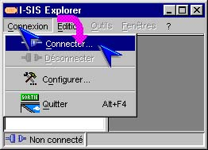
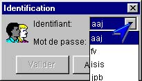
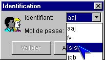
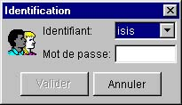
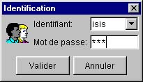
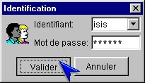
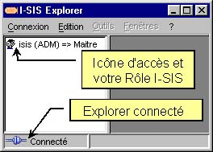
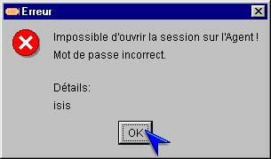
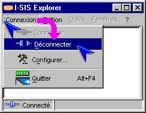

I-SIS Explorer

Guide d'utilisation
|
|
I-SIS Explorer |
|
|
Guide d'utilisation |
||
Si la fenêtre d'identification est déjà ouverte, passez au paragraphe «Sélectionner son identifiant»,
Sinon, cliquez "Connexion" de la barre de menu de I-SIS Explorer,
Cliquez "Connecter..." pour ouvrir la fenêtre d'identification.

Sur la fenêtre d'identification (cf. «Lancer le I-SIS Explorer» et «Se connecter»), cliquez sur la flèche du champ "Identifiant", pour afficher les identifiants disposant d'un abonnement sur le I-SIS Portail,

Pointez et cliquez sur votre identifiant pour le sélectionner,

La fenêtre d'identification affiche alors votre identifiant.

Saisissez votre mot de passe, au clavier, dans le champ "Mot de passe".

Cliquez sur le bouton "Valider", la fenêtre d'identification disparaît,

Vous êtes connecté au I-SIS Portail, si vos identifiants et mot de passe sont validés par le système d'exploitation de sa plate-forme. L'icône d'accès et votre rôle sur le I-SIS Portail sont affichés, dans le volet de gauche de I-SIS Explorer,

En cas d'erreur de saisie du mot de passe, le I-SIS Explorer affiche un message d'erreur. Validez le et re-saisissez un mot de passe.

Cliquez le menu "Connexion" dans la barre de menu,
Cliquez "Déconnecter" sur le sous-menu déroulant,

Le I-SIS Explorer est déconnecté du I-SIS Portail, mais reste ouvert (cf. «Fermer la fenêtre d'identification»).
Copyright © 2003 BV Associates. Tous droits réservés.